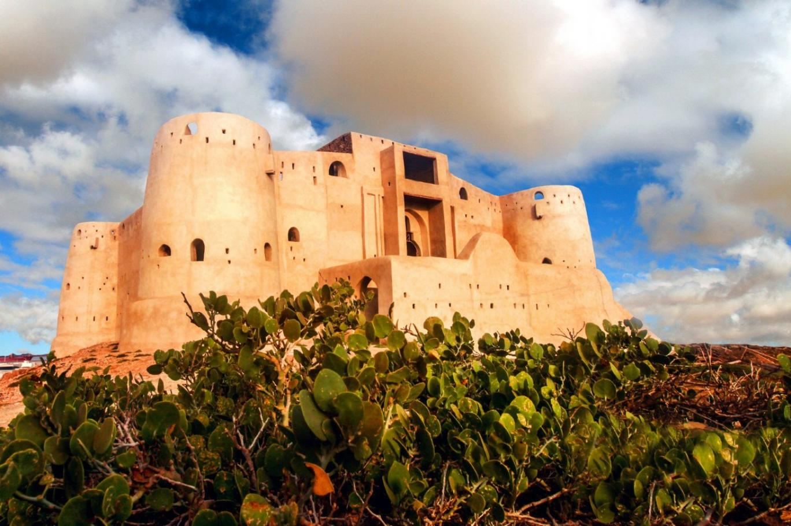

القرية التراثية

مكان يجمع تنوع جازان في موقع واحد؛ من البيت الجبلي إلى العشة التهامية والبيت الفرساني.
يمكن للزائر التعرف على الحرف والمأكولات والفنون الشعبية والاستمتاع بأجواء تستحضر تراث المنطقة.
القلعة الدوسرية

تُعد من أبرز المعالم التاريخية في المنطقة وأكثرها جذبًا للزوار.
بُنيت القلعة في أواخر العهد العثماني لتكون موقعًا عسكريًا واستراتيجيًا مهمًا، ويمنح موقعها الزائر إطلالة بانورامية مميزة على المدينة والساحل.
السوق الشعبي

سوق يعكس الحياة الشعبية في جازان، ويضم منتجات محلية مثل الفل والكادي والعطورات، والمصنوعات الفخارية والحرف اليدوية.
تجربة مناسبة لاقتناء تذكارات محلية وتذوق منتجات المنطقة والتعرف على أسواقها القديمة.
المكتبة العامة

وجهة ثقافية تجمع المعرفة والترفيه في مكان واحد، وتقدم برامج وفعاليات تعليمية وثقافية لجميع الأعمار.
يتميز بتصميمه العصري ومساحاته التفاعلية التي تجعله مكانًا مناسبًا لاكتشاف الثقافة وتنمية المهارات.
عالم المغامرات

وجهة ترفيهية عائلية داخل كادي مول، تضم ألعابًا إلكترونية وتفاعلية، وألعاب مهارة، وسيارات تصادم، لتمنح الأطفال والعائلات ساعات مليئة بالمرح والتحدي.
مطاعم شعبية منصف

منصف هو أيقونةً عصرية للمطبخ الجيزاني الأصيل، حيث يمزج بين عبق التراث وروح الحداثة ليقدم تجربة طعام فريدة تعكس هوية منطقة جازان. ويتميز بتصميمه المستوحى من العمارة الجيزانية
متحف للآثار والتراث
رحلة عبر تاريخ جازان، يعرّف الزائر بتراث المنطقة من خلال الآثار والمقتنيات التاريخية والحرف والموروث الشعبي. فرصة لاكتشاف جوانب من تاريخ جازان وثقافتها في تجربة تجمع بين المعرفة والاستكشاف.